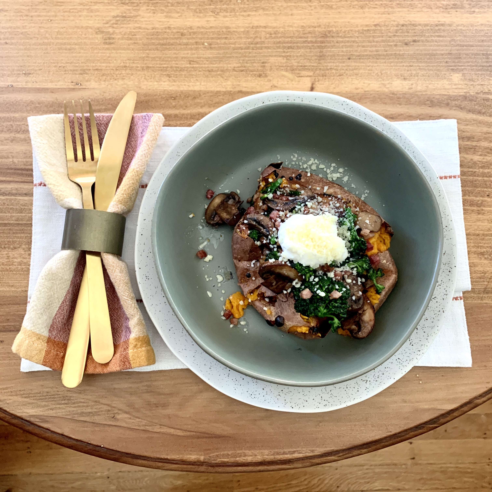

Stuffed Sweet Potatoes with Pancetta and Broccoli Rabe
I love this recipe because it can be scaled down to one serving, perfect for a solo night in! It's a big hit every time I've made it and, for my girlfriends (hey MoCo & JP!), it's a healthy and easy weeknight dinner staple. Also, though it's listed as an autumnal meal (sweet pots are best in fall), this is a yummy dinner any time of year!
First up, figure out when you want to eat. I always forget to get my potato cooking until I'm starving and it's no bueno. It's gotten too late! Of note, I don't have a microwave in my apartment so everything cooks by stovetop or oven. Your sweet potato will need to cook for 45 minutes at 450 degrees so plan accordingly! Be sure to wash it off and pierce it with a fork in a few spots before arranging it in your oven. I put it directly on the rack with a piece of foil on the bottom of my oven to catch any falling juices.
When you have about 10-15 minutes of cooking time left on your potatoes, grab your pancetta and cook it in a skillet over medium heat for about 4 minutes. I like the chopped package from Trader Joe's (found in the meat section) because it makes this recipe a million times easier. I only assume this because I've never actually used sliced pancetta because why?! Easy does it. Once your pancetta is a bit crispy, I like to add my chopped broccolini (sans stems) directly into the skillet to get those oils mixing. Toss this around with a bit of salt until the broccolini has softened, add your sliced mushrooms, thinly sliced garlic (2 cloves), and red pepper flakes (if you've opted to add 'em) and cook until everything is tender. This should all take about 5-7 minutes.
In a separate little bowl, mix your greek yogurt, parmesan, and nutmeg (I've never added this but maybe it would be delicious!) to taste. Remove your potatoes when they're ready, split them open, (add some butter!), and fluff the flesh with a fork. Top with your yogurt mixture, add your veggies and pancetta, and dollop a spoonful of yogurt to top it off!